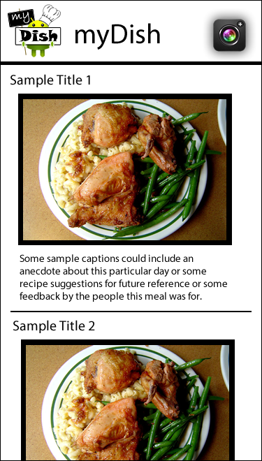
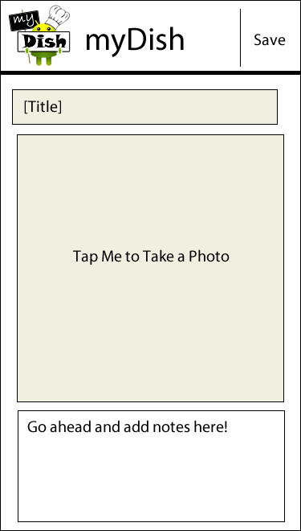
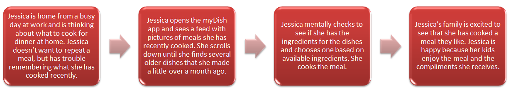

Our Application (Rough Idea)
On a base level, our team has come to a consensus on an idea for our application. We have decided to make an app that allows our users to take pictures of meals that they have made in order to provide them with a record of meal they’ve made, future inspiration for meals, and the ability to share their excellent meals with their friends. We see our idea as a food-Instagram, with the focus of meals specifically. We want to explore the ability to write notes and recipes on the ‘back’ of each meal picture, the opportunity to rate meals, and any additional features we think could bring value to our users.Application Screens
 
Interaction: Taking pictures of recipes and meals

Interaction: Looking for past recipes and meals

Interaction: Sharing pictures with others